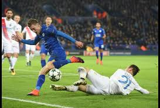

The contemporary history of the world's favourite game spans more than 100 years. It all began in 1863 in England, when rugby football and association football branched off on their different courses and the Football Association in England was formed - becoming the sport's first governing body.
The history of modern-day soccer was established in 1863. In October 1863, eleven representatives from London clubs and schools met at the Freemason’s Tavern to set up common fundamental rules to control the matches amongst themselves. The outcome of this meeting was the formation of the Football Association. In December 1863, the Rugby Football and Association football finally split as the supporters of the Rugby School rules walked out.
TItalians, Austrians and Germans drew to Europe, while Argentina, Uruguay and Brazil adopted the sport in South America. FIFA was established in the year 1904 and by early 1930s, different leagues were operating from various countries. FIFA is credited with organizing the first world cup in Uruguay. The history of soccer is rich with events, development and its growing craze all over the world. You will find yourself amazed as you learn about different times of this wonderful sport that has held our awe and admiration for over 3000 years.
This was a nice intro to the history of soccer, I hope you enjoyed it.